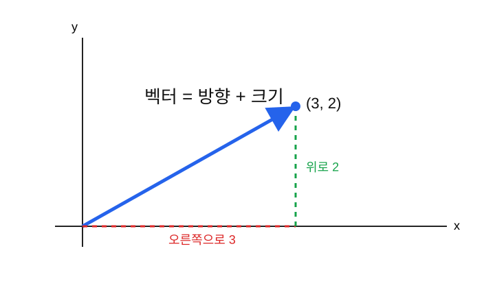
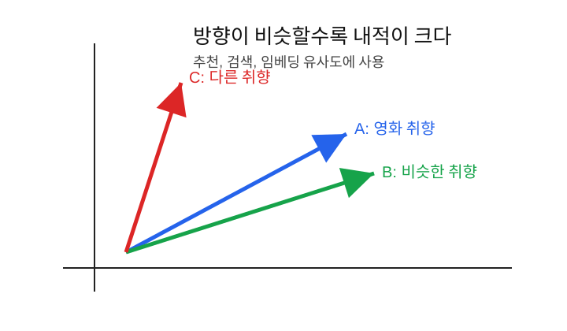

벡터는 여러 숫자를 순서대로 묶은 것이고, AI에서는 데이터 하나를 숫자 묶음으로 표현할 때 거의 항상 벡터를 사용한다.
AI는 글, 이미지, 소리, 사람의 취향을 그대로 이해하지 못한다. 먼저 전부 숫자로 바꿔야 한다.
예를 들어 사람은 사진을 보고 “고양이”라고 생각하지만, 컴퓨터는 사진을 픽셀 숫자들의 묶음으로 본다.
고양이 사진 -> 픽셀 숫자 묶음 -> AI 모델문장도 마찬가지다.
"오늘 날씨가 좋다" -> 문장 벡터 -> AI 모델AI에서 벡터는 데이터를 모델에 넣기 위한 기본 형태다.
벡터는 숫자를 순서대로 묶은 것이다.
[3, 2]이 벡터는 좌표평면에서 이렇게 생각할 수 있다.
오른쪽으로 3, 위로 2
즉 벡터는 두 가지 느낌을 가진다.
AI에서는 주로 숫자 묶음으로 쓰지만, 방향과 크기로 생각하면 유사도와 내적을 이해하기 쉽다.
학생 한 명을 숫자로 표현해 보자.
| 항목 | 값 |
|---|---|
| 키 | 170 |
| 몸무게 | 65 |
| 나이 | 20 |
이 학생은 다음 벡터로 표현할 수 있다.
[170, 65, 20]다른 학생은 이렇게 표현할 수 있다.
[160, 50, 19]사람 한 명을 숫자 3개짜리 벡터로 표현한 것이다.
사람의 영화 취향도 벡터로 표현할 수 있다.
| 장르 | 점수 |
|---|---|
| 액션 | 5 |
| 로맨스 | 1 |
| 코미디 | 3 |
| 공포 | 0 |
이 사람의 취향 벡터는 다음과 같다.
[5, 1, 3, 0]다른 사람의 취향이 다음과 같다고 하자.
[4, 1, 3, 0]두 사람은 액션과 코미디를 좋아하고 공포를 좋아하지 않는다. 그래서 취향이 비슷하다.
추천 시스템은 이런 식으로 사람과 영화의 벡터를 비교해서 추천할 수 있다.
아주 작은 흑백 이미지가 있다고 하자.
0 0 1
0 1 1
0 0 1이 이미지는 3행 3열이지만, 길게 펴면 벡터가 된다.
[0, 0, 1, 0, 1, 1, 0, 0, 1]실제 이미지는 훨씬 크다. 예를 들어 28 x 28 흑백 이미지는 픽셀 784개이므로 길이 784짜리 벡터로 볼 수 있다.
28 x 28 이미지 -> 784개 숫자 벡터문장도 AI 모델 안에서는 벡터로 표현된다.
"왕" -> [0.21, -0.53, 1.12, ...]
"여왕" -> [0.25, -0.49, 1.05, ...]
"자동차" -> [-0.82, 0.10, -0.33, ...]이런 벡터를 임베딩이라고 부른다.
의미가 비슷한 단어는 벡터도 비슷한 방향을 가지는 경우가 많다.
"왕"과 "여왕"은 가깝다.
"왕"과 "자동차"는 멀다.스칼라는 숫자 하나다.
3벡터는 숫자 여러 개다.
[3, 2]AI에서 자주 보는 형태는 다음과 같다.
| 이름 | 예 | 의미 |
|---|---|---|
| 스칼라 | 3 |
숫자 하나 |
| 벡터 | [3, 2] |
숫자 목록 |
| 행렬 | [[1, 2], [3, 4]] |
숫자 표 |
| 텐서 | 더 높은 차원의 숫자 배열 | 이미지 묶음, 영상, 모델 내부 데이터 |
벡터의 차원은 숫자가 몇 개 들어 있는지를 뜻한다.
[3, 2]이 벡터는 숫자가 2개이므로 2차원 벡터다.
[170, 65, 20]이 벡터는 숫자가 3개이므로 3차원 벡터다.
[0.12, -0.4, 1.7, 0.0, 2.1]이 벡터는 숫자가 5개이므로 5차원 벡터다.
언어모델에서는 단어 하나를 768차원, 1024차원, 또는 그보다 큰 벡터로 표현하기도 한다.
벡터는 같은 위치끼리 더한다.
[1, 2] + [3, 4] = [4, 6]계산 과정은 다음과 같다.
첫 번째 자리: 1 + 3 = 4
두 번째 자리: 2 + 4 = 6생활 예시로 보면, 장바구니를 더하는 것과 비슷하다.
| 품목 | 장바구니 A | 장바구니 B | 합계 |
|---|---|---|---|
| 사과 | 1 | 3 | 4 |
| 바나나 | 2 | 4 | 6 |
그래서 다음과 같이 쓸 수 있다.
[사과 1개, 바나나 2개] + [사과 3개, 바나나 4개] = [사과 4개, 바나나 6개]벡터에 숫자 하나를 곱하면 모든 원소에 곱한다.
3 * [2, 5] = [6, 15]생활 예시:
1인분 재료 = [밥 1공기, 계란 2개]
3인분 재료 = 3 * [1, 2] = [3, 6]AI에서는 벡터의 크기를 키우거나 줄이는 느낌으로 이해하면 된다.
벡터의 길이는 원점에서 벡터 끝까지의 거리다.
2차원 벡터 [3, 4]의 길이는 피타고라스 정리로
계산한다.
길이 = sqrt(3^2 + 4^2) = sqrt(9 + 16) = 5벡터 길이는 데이터의 크기 또는 강도를 나타내는 데 쓰일 수 있다.
예를 들어 취향 벡터가 다음과 같다고 하자.
[5, 5, 5, 5]이 사람은 전반적으로 영화를 많이 좋아하는 사람일 수 있다.
[1, 1, 1, 1]이 사람은 비슷한 방향의 취향이지만 강도는 약할 수 있다.
내적은 두 벡터의 같은 위치끼리 곱한 뒤 모두 더하는 계산이다.
[a, b] · [c, d] = a*c + b*d예를 들어 보자.
[1, 2] · [3, 4] = 1*3 + 2*4 = 3 + 8 = 11계산은 단순하지만 의미가 중요하다.
내적은 두 벡터가 얼마나 같은 방향을 보고 있는지 알려준다.

사람 A의 영화 취향:
A = [5, 1, 3, 0]사람 B의 영화 취향:
B = [4, 1, 3, 0]내적을 계산해 보자.
A · B = 5*4 + 1*1 + 3*3 + 0*0
= 20 + 1 + 9 + 0
= 30사람 C의 영화 취향:
C = [0, 5, 0, 5]A와 C의 내적은 다음과 같다.
A · C = 5*0 + 1*5 + 3*0 + 0*5
= 0 + 5 + 0 + 0
= 5A와 B의 내적은 30이고, A와 C의 내적은 5다. 그래서 A는 C보다 B와 취향이 더 비슷하다고 볼 수 있다.
검색어 벡터가 있다고 하자.
검색어: "AI 반도체"
q = [4, 5, 1]문서 두 개가 있다.
문서 A = [4, 5, 0]
문서 B = [1, 0, 5]검색어와 문서 A의 내적:
q · A = 4*4 + 5*5 + 1*0 = 16 + 25 + 0 = 41검색어와 문서 B의 내적:
q · B = 4*1 + 5*0 + 1*5 = 4 + 0 + 5 = 9내적이 더 큰 문서 A가 검색어와 더 관련 있다고 볼 수 있다.
실제 검색 시스템과 추천 시스템은 이 아이디어를 더 정교하게 사용한다.
신경망의 한 뉴런도 내적과 비슷하게 계산한다.
입력:
x = [x1, x2, x3]가중치:
w = [w1, w2, w3]뉴런의 계산:
z = x1*w1 + x2*w2 + x3*w3 + b이것은 다음처럼 쓸 수 있다.
z = x · w + b즉 신경망의 기본 계산은 벡터 내적이다.
입력 벡터와 가중치 벡터가 다음과 같다고 하자.
x = [2, 3]
w = [4, 1]
b = 5뉴런 출력 z는 다음과 같다.
z = x · w + b
= 2*4 + 3*1 + 5
= 8 + 3 + 5
= 16이 숫자 16이 다음 함수로 넘어간다. 예를 들어 ReLU를
통과하면 다음과 같다.
ReLU(16) = 16만약 z = -3이었다면 다음과 같다.
ReLU(-3) = 0def dot(a, b):
total = 0
for i in range(len(a)):
total += a[i] * b[i]
return total
A = [5, 1, 3, 0]
B = [4, 1, 3, 0]
C = [0, 5, 0, 5]
print(dot(A, B)) # 30
print(dot(A, C)) # 5NumPy를 쓰면 더 간단하다.
import numpy as np
A = np.array([5, 1, 3, 0])
B = np.array([4, 1, 3, 0])
print(np.dot(A, B)) # 30| 헷갈리는 말 | 쉽게 풀어쓴 말 |
|---|---|
| 벡터 | 숫자를 순서대로 묶은 것 |
| 차원 | 벡터 안에 숫자가 몇 개 있는지 |
| 벡터 길이 | 벡터의 크기 |
| 방향 | 숫자들이 만들어내는 전체적인 쏠림 |
| 내적 | 두 벡터가 얼마나 비슷한 방향인지 재는 계산 |
| 임베딩 | 글, 단어, 이미지 등을 벡터로 바꾼 표현 |
[1, 2] + [3, 4]는 얼마인가?3 * [2, 5]는 얼마인가?[1, 2] · [3, 4]는 얼마인가?AI는 세상을 숫자로 바꿔서 계산한다. 벡터는 그 숫자 표현의 기본 단위다. 이미지, 문장, 사람의 취향, 검색어 모두 벡터가 될 수 있다. 내적은 두 벡터가 얼마나 비슷한 방향을 가지는지 계산하는 방법이며, 추천, 검색, 신경망 계산의 핵심 아이디어로 쓰인다.
다음 노트: 03_행렬곱과신경망